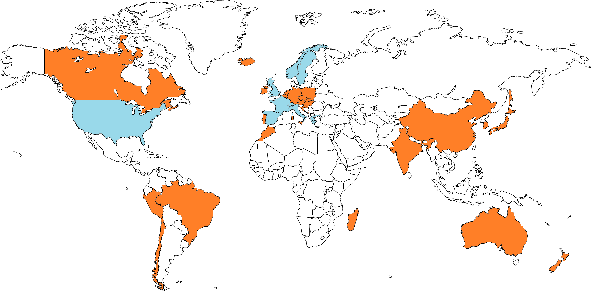

Pays déjà visités
Pays que je souhaite visiter
Légende
Les marquages sont indicatifs.
Carte des voyages
Les pays colorés en bleu représentent ceux que j'ai déjà visités. Les pays colorés en orange représentent ceux que je souhaiterais visiter un jour.